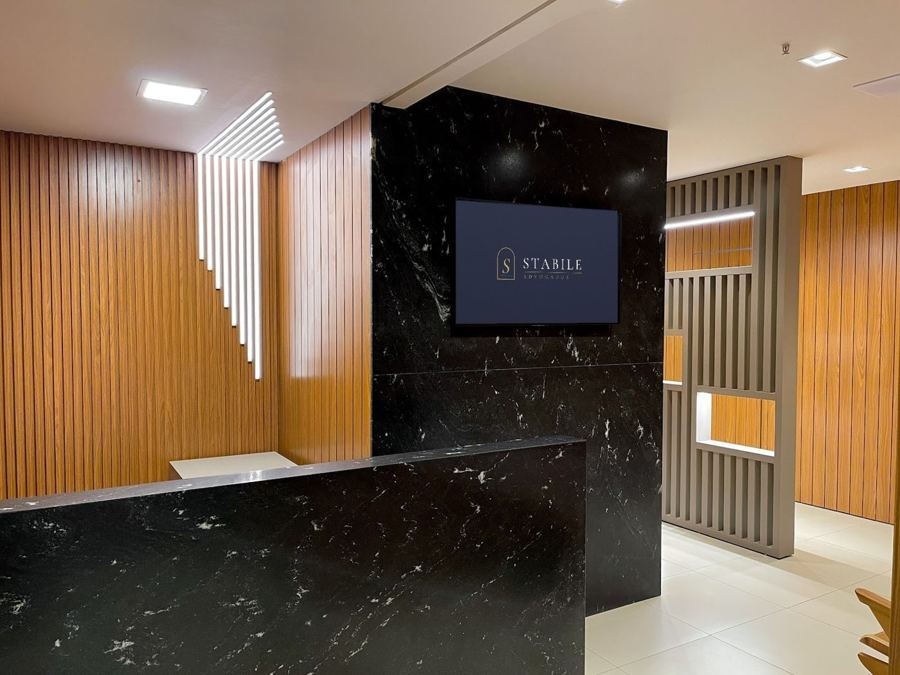

Empregado com carteira
Trabalhador urbano ou rural com carteira assinada na data do acidente.
Atendimento pelo WhatsApp em todo o Brasil
Preencha abaixo: queremos entender melhor a sua situação.
Toque na opção. Não precisa digitar nada.
Algo que atrapalha ou diminui o seu trabalho.
Uma ideia aproximada já ajuda.
Um especialista do escritório fala com você pelo WhatsApp.
Seus dados ficam só com o escritório.
Abrimos o WhatsApp do escritório com as suas respostas. Se não abriu, toque abaixo.
Abrir o WhatsAppReceba do INSS e continue trabalhando
Sofreu um acidente e ficou com alguma sequela? Você pode receber o auxílio-acidente do INSS e continuar trabalhando. Vale para acidente de qualquer tipo: no trânsito, em casa, no esporte ou no trabalho.
Atenção importante
O auxílio-acidente é um benefício do INSS de caráter indenizatório, para quem sofreu um acidente e ficou com sequela que diminui a capacidade de trabalho. Muitas pessoas acham que precisa ser acidente de trabalho, mas pode ser um acidente de qualquer natureza.
Quem tem direito
É preciso ser segurado do INSS, ter sofrido um acidente de qualquer natureza e ter ficado com sequela permanente que diminua a capacidade para o trabalho. Não é exigido tempo mínimo de contribuição.
Trabalhador urbano ou rural com carteira assinada na data do acidente.
Quem presta serviço a várias empresas por meio de sindicato ou órgão gestor.
Trabalhador rural que produz em regime de economia familiar.
Como funciona o benefício
Quando buscar o auxílio-acidente
Se tiver dúvida em algum deles, tudo bem: é exatamente isso que a equipe verifica com você.

Esse é um dos casos mais comuns. O auxílio-acidente começa no dia seguinte ao fim do auxílio-doença. Se você não recebeu auxílio-doença, ele conta a partir da data do acidente.
Como funciona
As perguntas rápidas desta página, ou chama direto no WhatsApp.
Um especialista olha a sua situação e diz quais documentos separar.
Do pedido no INSS à decisão, com notícia a cada etapa do processo.
📱 Você não precisa ir até o escritório. Atendemos em todo o Brasil pelo WhatsApp.
Quem já passou por aqui
★★★★★Excelente atendimento, equipe muito atenciosa, competente e comprometida. Sempre disponível para esclarecer dúvidas e acompanhar cada etapa com transparência.
Isabela Senaavaliação no Google
★★★★★Sou extremamente grato pela dedicação, atenção e profissionalismo durante todo o processo. Obrigado pela forma humana e respeitosa com que fui tratado.
Jhonatan Rangeldepoimento ao escritório
★★★★★Prestação de serviço de alta qualidade. Super indico!
Maria Caroline Roqueavaliação no Google

Rua 14, Ed. Flamboyant Park Business, salas 2602 a 2607, Jardim Goiás, Goiânia (GO). Segunda a sexta, das 9h às 18h.
Dúvidas frequentes
É um benefício que o segurado do INSS tem direito quando fica com alguma sequela de um acidente de qualquer natureza. Ele é pago como indenização, por isso nada impede que a pessoa continue trabalhando enquanto recebe.
Quem, ao mesmo tempo: é segurado do INSS (empregado urbano ou rural com carteira assinada, trabalhador avulso ou segurado especial rural), sofreu um acidente de qualquer natureza e ficou com sequela permanente que diminui a capacidade para o trabalho. Não é preciso tempo mínimo de contribuição.
Depende de quanto tempo você estava sem emprego. Se fazia menos de 1 ano que estava desempregado(a), pode ter direito. Vale analisar o seu caso.
50% do salário de benefício. Por exemplo: metade do valor que a pessoa recebeu de auxílio-doença.
No dia seguinte ao fim do auxílio-doença. Se a pessoa não recebeu auxílio-doença, a partir da data do acidente.
Depois de concedido, o auxílio-acidente só é cortado quando a pessoa se aposenta.
Sim. É uma indenização que o INSS paga a quem sofreu o acidente, então quem recebe pode continuar trabalhando.
Pode ter. Mas os valores atrasados alcançam só os últimos 5 anos.
Os advogados do escritório analisam a sua situação e acompanham você em todas as etapas do processo, do pedido no INSS à decisão.